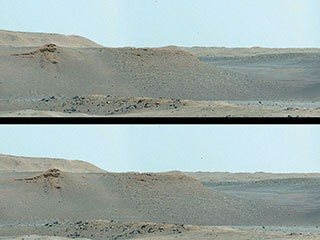

SCIENCE SITE
Perseverance image ↗MARSWALK PLANNER / WESTERN JEZERO CRATER
Plan a walk across real Martian terrain, see where the crew must turn back, then run the EVA. When Mission Control cuts the clock mid-walk, you decide what science is still worth it.
Speed changes with slope (Tobler hiking function). Grades over 30% are impassable. The crew must be home with 10 min of reserve left.

SCIENCE SITE
Perseverance image ↗The map is a hillshade of the USGS Mars 2020 Context Camera (CTX) elevation mosaic at 20 m per cell. The browser plans routes live on that grid. It uses Dijkstra's algorithm over the eight neighbouring cells, and each step costs walking time. Walking speed follows Tobler's hiking function: fastest on a slight downhill, slower uphill and on steep descents. So the way back takes a different time from the way out. Steps steeper than 30% are treated as impassable. "Gentler slopes" adds a penalty for grade, so it trades a little time for easier footing.
For several sites, the planner tries every visiting order and picks the fastest. "Best plan" tries every subset of sites and picks the highest total science value that still gets the crew home in time. The time limit is the smaller of the Mission Control budget and the suit's life support, minus a 10-minute reserve. The point of no return is the first spot on the plan where the fastest way home would arrive after that limit. The shaded area marks places the crew could not visit and still return in time.
Limits: Tobler's function was measured for hikers on Earth. It does not model Mars gravity, suit mobility, loose regolith, rest stops or consumables beyond the time limit. Habitat and site positions are illustrative, and science values are user-set priorities. This is an educational tool, not an operational planner.